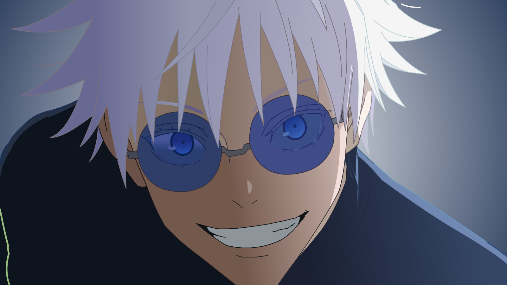

Hi! I’m Ezekiel Houngbo, and I have a passion for all things tech and creativity. I love playing video games, making video edits, and exploring different editing software to bring my ideas to life. Technology fascinates me, and I enjoy learning new tools and techniques to improve my skills. Whether it's gaming or editing, I’m always looking for new ways to express creativity and have fun along the way!
Portfolio
Video Editing Project #1
I used an editing software named “Davinci Resolve” to make a 44 second video edit of a popular anime “Frieren : Beyond journey's end” with the song “The Bird song” by Noah Floersch.
Poly Art Project
For a school project, I was asked to make some poly art with the editing software “Adobe Animate”. I chose a picture of one of the video game characters in a game named “Valorant”. I then took that picture and turned it into triangles. I cropped the picture and moved the logo of the video game closer to his face.
Light Painting
For a school project last year (11th grade), my teacher gave my group to make a light painting project where we would draw in the air with led lights and he'd take a picture of it. Since this was a group project, I was tasked with laying down on some chairs so that my colleagues could draw an outline of my body (the person throwing the basketball).
Video Editing Project #2
I used an editing software named “Davinci Resolve” to make a 22 second video edit of a popular anime “The Apothecary Diaries” with the song “Poison” by Bell Biv DeVoe.

Vector Illustration
For a school project last year (11th grade), my teacher gave me the task of taking a picture and reproducing it with adobe animate as a vector drawing.